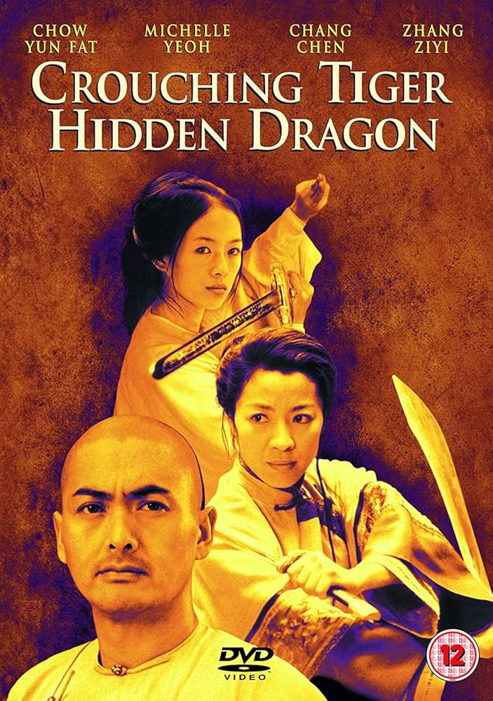

is an epic romantic drama wuxia martial arts film.
It is based on the Chinese novel of the same name, serialized between 1941 and 1942 by Wang Dulu, the fourth part of his Crane-Iron Series. Set in 19th-century Imperial China, the plot follows two master warriors, Li Mu Bai (Chow) and Yu Shu Lien (Yeoh), who are faced with their greatest challenge when the treasured Green Destiny sword is stolen by the mysterious thief Jen Yu (Zhang).
